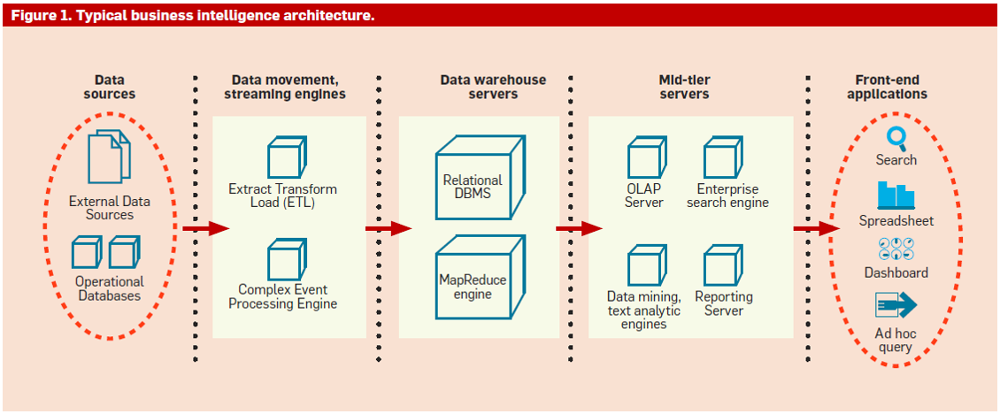

Módulo 1: Elementos conceptuales sobre la inteligencia empresarial
Módulo 2: Organización de información en sistemas de bases de datos
Módulo 3: Transformación de datos en conocimientos para la toma de decisiones
Módulo 4: Minería de datos y análisis de resultados
Módulo 1: Elementos conceptuales sobre la inteligencia empresarial
Módulo 2: Organización de información en sistemas de bases de datos
Módulo 3: Transformación de datos en conocimientos para la toma de decisiones
Módulo 4: Minería de datos y análisis de resultados
La vista panorámica
Fuente: Chaudhuri, S.; Dayal, U.; Nrasayy, V. (2011). An Overview of Business Intelligence Technology. In Communications of the ACM, August 2011, Vol. 54, No. 8, p. 88-98.